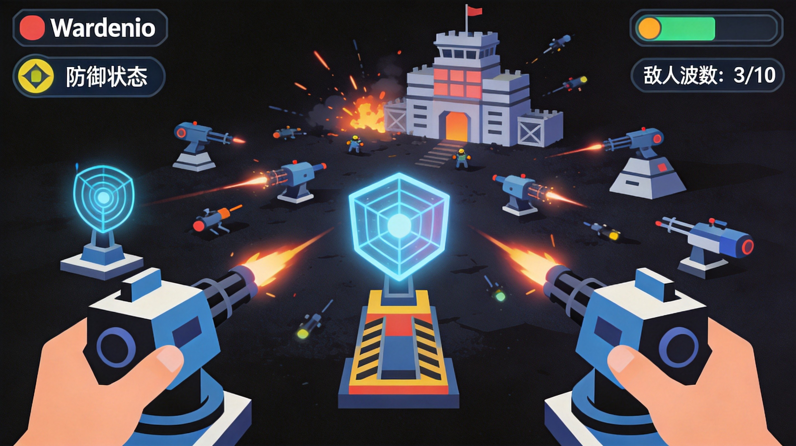

Warden.io drops players into mysterious dungeons filled with monsters, loot, and deadly bosses. This dungeon crawler io game combines roguelike elements with multiplayer action, creating intense sessions where every choice matters. Whether you're a newcomer or looking to improve, this guide covers essential strategies for surviving the dungeon depths.
🎮 Game Basics
Warden.io is a dungeon-crawling action game where players descend through increasingly dangerous floors, fighting monsters and collecting loot. The goal is to reach the final floor, defeat the boss, and survive.
Core Loop
- Enter dungeons and explore procedurally generated floors
- Fight monsters to gain experience and gold
- Collect loot including weapons, armor, and consumables
- Defeat floor bosses to unlock the next level
- Upgrade between runs to become more powerful
Death Consequences
When you die in Warden.io, you lose your current run progress. This roguelike element means each run is precious. Learning when to press forward and when to retreat is crucial for long-term success.
👤 Class Selection
Each class in Warden.io has unique abilities, playstyles, and strengths. Choosing the right class for your skill level and preferred approach significantly impacts your success rate.
Warrior
The Warrior is the beginner-friendly tank. High health and straightforward melee combat make this class forgiving for new players. However, Warriors struggle against ranged enemies and require good positioning to excel.
Mage
Mages deal massive area damage but are squishy. If you can manage positioning and resource management, the Mage rewards you with devastating spell combos. The key is maintaining distance while casting.
Rogue
Rogues excel at evasion and critical strikes. Fast movement and high burst damage make Rogues excellent for hit-and-run tactics. They require more skill to master but reward aggressive playstyles.
Don't stick with one class exclusively. Different classes excel on different floor types. Learn multiple classes to handle whatever the dungeon throws at you.
🗺️ Dungeon Navigation
Floor Types
Each floor has distinct characteristics and challenges. Early floors are tutorial-like, teaching mechanics. Mid floors introduce complex enemy compositions. Late floors test everything you've learned.
Efficient Exploration
Don't rush through rooms. Clear systematically and collect all loot before proceeding. However, don't linger too long—pushing to the next floor before getting overwhelmed is often wise.
Secret Rooms
Hidden rooms contain rare loot and sometimes shortcuts. Watch for walls that look slightly different or destructible objects. Finding secret rooms can mean the difference between struggling and thriving.
⚔️ Combat Fundamentals
Dodge Timing
Most enemy attacks are telegraphed with visible indicators. Learning to read these cues and dodge at the right moment is the single most important combat skill. Practice in early floors until dodging feels natural.
Enemy Prioritization
Not all enemies are equal threats. Prioritize ranged attackers and healers over melee fodder. The zombie charging at you is less dangerous than the skeleton archer behind it.
Using Terrain
Corners and doorways create natural chokepoints. Lure enemies into narrow spaces where you can fight them one at a time rather than being surrounded. Never let enemies flank you.
👹 Boss Fight Strategies
Boss fights are the defining moments of each floor. Each boss has unique attack patterns and mechanics. Learning these patterns is essential for consistent runs.
Pattern Recognition
Bosses cycle through attack patterns. Watch for the wind-up animation before each attack. Once you recognize the pattern, you can predict and prepare for what's coming next.
Safe Zones
Most boss attacks leave specific safe zones. Learning where to stand during each attack pattern lets you minimize damage taken. This knowledge comes from dying and learning—don't be discouraged by failed attempts.
For boss fights, patience beats aggression. Wait for clear openings, deal damage, then retreat. Rushing leads to panic dodges and inevitable death.
Phase Transitions
Many bosses enter enraged phases at health thresholds. These transitions often include dangerous new attack patterns. When a boss changes phase, play defensively until you learn the new pattern.
💎 Loot & Progression
Item Rarity
Items range from common to legendary. Higher rarity means better stats, but don't ignore good common items. Consistent decent gear beats unreliable rare finds.
Equipment Synergies
Some equipment pieces work better together. Look for sets or complementary bonuses. A high-damage weapon means nothing if your armor is so poor you die in two hits.
Gold Management
Gold is precious and limited. Between runs, decide what to upgrade. Often it's better to save for expensive but powerful upgrades rather than spending on incremental improvements.

❓ Frequently Asked Questions
What's the best class for beginners?
Warrior is the most forgiving for beginners due to high health and simple mechanics. However, Mage can be easier if you prioritize positioning and ranged combat from the start.
How do I deal with being surrounded?
Use area-of-effect abilities if available, or create distance immediately. Never try to tank multiple enemies—use knockback effects to scatter them and fight on your terms.
Should I fight every enemy or skip some?
Generally, fight most enemies for experience and gold. However, if you're low on health and the exit is nearby, it's okay to skip non-essential fights. Balance risk versus reward.
What's the best strategy for boss fights?
Learn attack patterns through repetition. Focus on dodging, not dealing damage. Only attack during safe windows. Patience wins boss fights.
How important is gold between runs?
Very important for progression. Efficient runs accumulate gold faster than slow clears. Focus on completing runs (even imperfect ones) rather than perfecting single attempts.
📝 Conclusion
Warden.io rewards patience, pattern recognition, and strategic decision-making. Each death teaches something new. Use failed runs as learning opportunities, and you'll progressively improve. Remember: the dungeon always wins eventually—your goal is to delay that as long as possible.
Enjoy dungeon crawling? Try Mope.io for a different survival experience, or check out Diep.io for another action-packed io game.
Last updated: January 30, 2024
Written by the iogameguide.com team